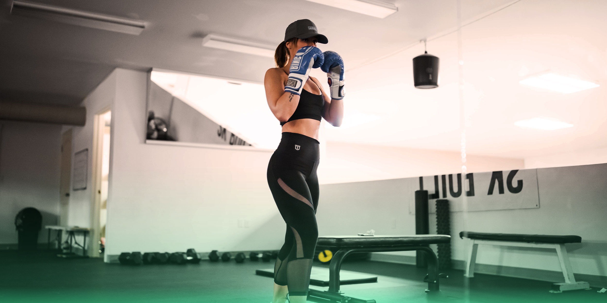
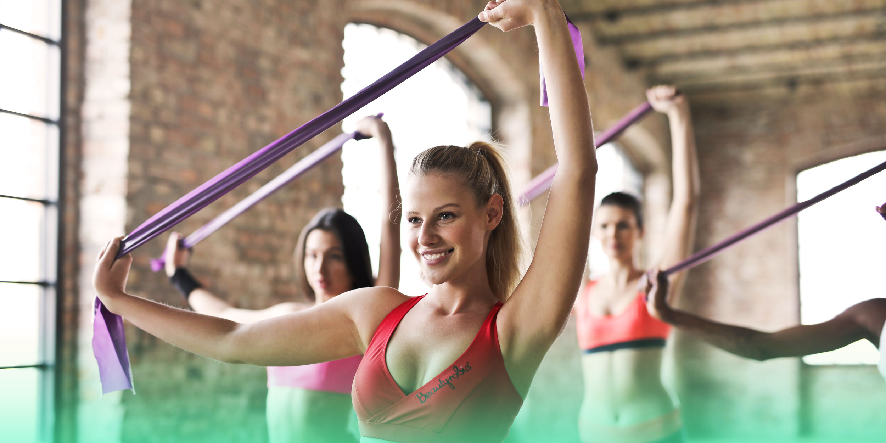

¿QUÉ SON LOS ENTRENAMIENTOS HIIT Y POR QUÉ HACERLOS?
El término "HIIT" es el acrónimo en inglés significa High-Intensity Interval Training
(entrenamiento de intervalos de alta intensidad), y consiste en ejercicios de cardio
rápidos y altamente efectivos. En vez de subirte a la bicicleta o la caminadora y correr
a un ritmo constante durante una hora, en un entrenamiento HIIT realizas múltiples
movimientos intensos y de alto ritmo cardíaco en 30 minutos o menos. La clave es
esforzarte al máximo. Durante tus intervalos de actividad física, debes alcanzar entre
el 80 y el 95 por ciento del máximo de tu ritmo cardíaco, lo que equivale a entre ocho
y nueve en una escala de uno a diez. Con los entrenamientos de intervalos de alta
intensidad, más tiempo no necesariamente significa mejores resultados.
EJERCICIOS BÁSICOS PARA TRABAJAR FUERZA SIN IR AL GYM
El trabajo de fuerza es fundamental en los entrenamientos semanales y aplicándolos adecuadamente
puedes lograr grandes resultados al correr. Al realizar ejercicios de fuerza fortaleces e
incrementas la cantidad de masa muscular de tu cuerpo y una mejor composición corporal y
acelerar tu metabolismo, lo cual también ayuda a protegerte de la pérdida de masa muscular.
Entrenar la fuerza es la base para disfrutar de un running sin lesiones y llevar un plan de
entrenamiento con kilómetros, velocidad y ritmo considerables. Y por imposible que parezca,
no necesitas ir al gimnasio y pasar horas levantando pesas para lograrlo, también puedes usar
tu propio peso corporal. Te damos varios ejercicios para empezar hoy mismo.

EL KICKBOXING Y SUS BENEFICIOS
Es un deporte que mezcla técnicas del boxeo con artes marciales para combina la fuerza y
resistencia en un ejercicio calificado de aeróbico. La práctica de este ejercicio puede
ser tanto en un ring, como en un gimnasio, y las tácticas que se utilizan están consideradas
de autodefensa. Las técnicas que se emplean son principalmente para desorientar y
posteriormente derrotar al oponente. En lo que se refiere a los puñetazos, hay tres tipos:
el jab, el uppercut y el gancho. El golpe de gancho es uno de los ataques más contundentes
dado que hace que el contrincante se balancee mediante un golpe fuerte en el costado.
Las patadas también son técnicas de este deporte, con las variantes de gancho, costado,
frontal, barrido giratorio y giratoria trasera. Las técnicas se realizan de manera rápida
e intentando pillar al contrincante desprevenido.
BENEFICIOS DE PRACTICAR PILATES
En general, los ejercicios de Pilates están destinados a mejorar la función corporal en
fases iniciales de tratamiento de una patología, en fases posteriores de mantenimiento o
mejora del estado físico, e incluso a nivel deportivo, previniendo lesiones y mejorando del
rendimiento. Además, es una de las herramientas con la que cuenta el fisioterapeuta para
aplicar ejercicio terapéutico en sus pacientes.Tanto si te planteas probar este método, como
si ya eres un fiel practicante, conviene saber cuáles son los beneficios de Pilates: “Tiene un
efecto directo sobre el sistema neuromuscular, incidiendo en mejorar la consciencia corporal,
los patrones de activación muscular, la postura, el equilibrio y la coordinación”, menciona
Pablo Vera, fisioterapeuta miembro de la Comisión de Ejercicio Terapéutico del Colegio
Profesional de Fisioterapeutas de la Comunidad de Madrid. Los beneficios que se pueden obtener
a través de la práctica del método Pilates son diversos y muy interesantes para la salud de la
persona. El método gira en torno al trabajo del powerhouse o centro del cuerpo,
la consciencia corporal durante el movimiento y el trabajo de la respiración.

¿QUÉ ES Y PARA QUÉ SIRVE EL STRETCHING?
El stretching es una disciplina que cada día es más común en los gimnasios. Básicamente,
consiste en una rutina de diferentes ejercicios derivados del yoga, de la gimnasia tradicional
y de la danza clásica. Son movimientos suaves que, con el tiempo, mejoran la flexibilidad de los
músculos. Precisamente, al mejorar la flexibilidad de los músculos, es una disciplina que se
debe practicar casi a diario. Además, aunque parezca una actividad sencilla, los ejercicios
son relativamente complejos y requieren de una correcta respiración, concentración, calma y
relajación. Todo esto es importante porque una buena oxigenación atenúa el estado de tensión.
Además, sirve para aliviar los dolores musculares y de las articulaciones, mejora la postura,
estimula la consciencia corporal y mejora la movilidad del cuerpo. A esto se une que mejora el
rendimiento de la persona a la hora de entrenar con peso, ya que no solo será más ágil, sino
que también evitará futuras lesiones.